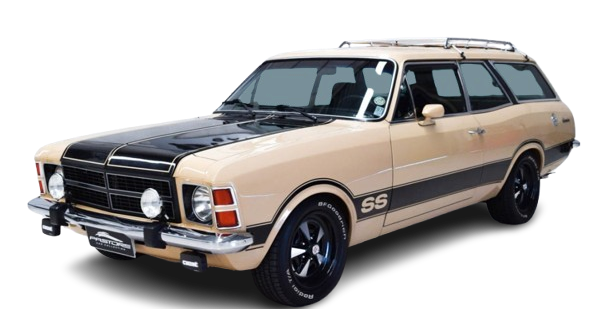

CARAVAN SS
Com a imponência de uma perua e a ferocidade de um esportivo puro-sangue, a Caravan SS é a lenda que comprovou que família e adrenalina podem, sim, andar lado a lado, ronronando um motor clássico.

HISTÓRIA
Baseado no Chevrolet Opala, a Caravan também se tornou um dos grandes sucessos da General Motors Corporation. Na Europa, a perua foi fabricada pela alemã Opel como Rekord Caravan, nas versões de duas e quatro portas.
Junto com o Opala, a sua variante perua também estreava a linha 1975. Denominada de Caravan, a perua só tinha a opção de três portas ao contrário da Opel Rekord Caravan, além dos motores de quatro e seis cilindros.
Assim como o Opala, a Caravan era idêntica aos seus precursores Opel Rekord, com exceção das quatro portas neste último, é claro. Para-choques, grade e adereços também eram diferentes.
A Chevrolet Caravan, assim como o Opala,eram oferecidos em duas versões, a de 2,5 litros e a de 4,1 litros, Standard e Comodoro, respectivamente, a vitaminada versão SS contava com o motor 250-S de 148 cv, alimentado por um carburador de corpo duplo.
Esteticamente, a SS era diferenciada pelas rodas de seis polegadas, faixa preta decorativa nas laterais e no capô, faróis auxiliares e espelhos retrovisores esportivos pintados na cor do veículo.
FICHA TECNICA
Modelo: Caravan SS
Ano: 1976–1980
Motor: 4.1 6 cilindros
Potência: ≈140 cv
Torque: ≈29 kgfm
0–100 km/h: ≈11 s
Vel. Máx: ≈170 km/h
Peso: ≈1.340 kg
Tração: Traseira
Câmbio: Manual 4 marchas
Dimensões (C×L×A): 4.688×1.765×1.360 mm
CURIOSIDADE
Uma das curiosidades mais surpreendentes da Chevrolet Caravan SS é que, apesar de ser uma perua familiar, ela foi uma das poucas peruas esportivas de alta performance oferecidas no mercado brasileiro em sua época, e por um período muito breve.
GALERIA
Imagens do Caravan SS
Canal: Renato Bellote